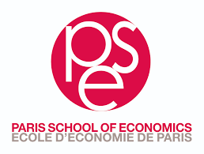
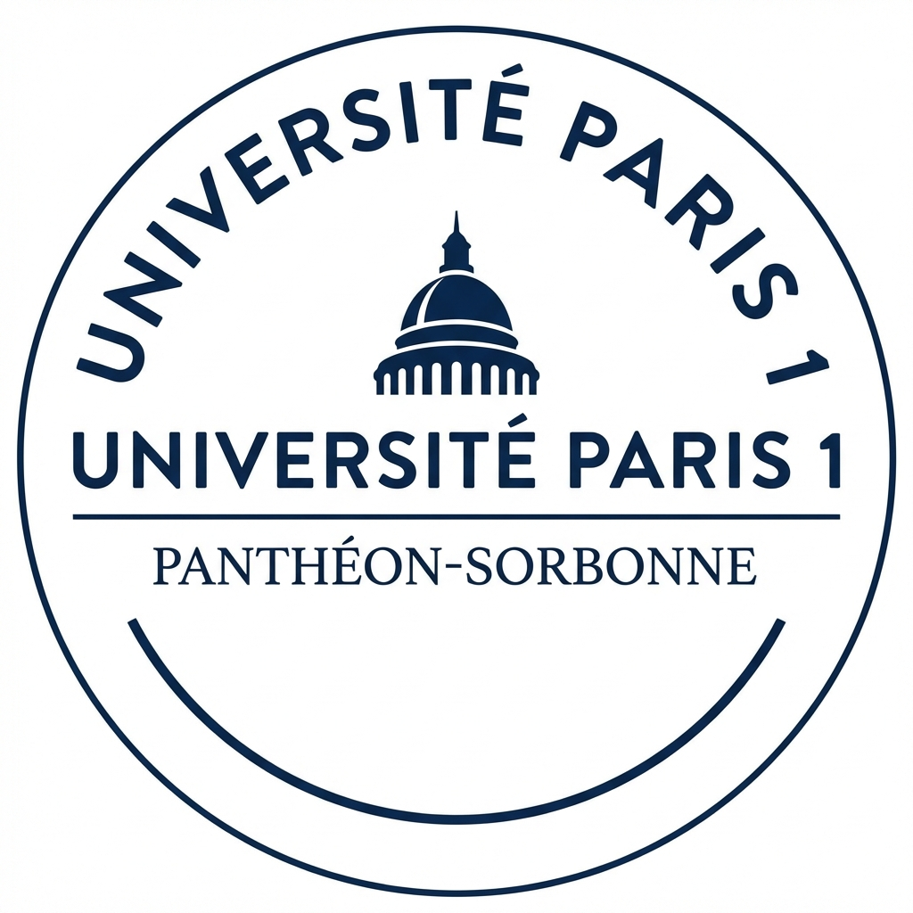
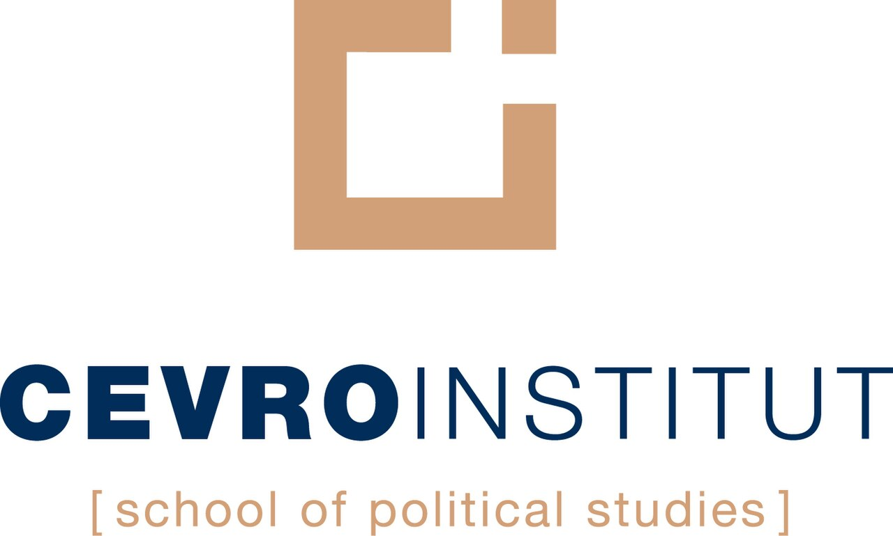

Origin
- Raised in San Clemente, CA, moved to Prague, CZ at 18 to pursue an undergraduate degree, and now am completing my masters in Paris, FR.
Portfolio
MSc candidate in Economics & Psychology, focused on behavioral science, experimental research, and customer insight strategy.
Available for research consulting, experimental design, and customer insights projects.
About
Education



Experience
Projects
Skills
Data Modeling & Analysis
I can model, predict, and extract insight from any dataset using advanced statistics and machine learning, including XGBoost, RNN, computer vision, and Bayesian inference, to find insightful leverages.
Nudges & Choice Architecture
I implement nudging and choice architecture to motivate decisions. This has been done in both of my theses in my masters, multiple projects, and work on the Classical Historian's website.
Human Behavior & Prediction
I analyze human behavior at both micro and macro levels, grounded in psychology, economics, and sociology. Every insight is data-driven, backed by scientific literature and statistical evidence.